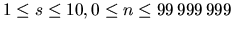

| LC-Display |
A friend of you has just bought a new computer. Until now, the most powerful computer he ever used has been a pocket calculator. Now, looking at his new computer, he is a bit disappointed, because he liked the LC-display of his calculator so much. So you decide to write a program that displays numbers in an LC-display-like style on his computer.
The input file contains several lines, one for each number to be displayed. Each line contains two integers s, n ( ), where n is the number to be displayed and s is the size in which it shall be displayed.
The input file will be terminated by a line containing two zeros. This line should not be processed.
Output the numbers given in the input file in an LC-display-style using s ``-'' signs for the horizontal segments and s ``|'' signs for the vertical ones. Each digit occupies exactly s+2 columns and 2s+3 rows. (Be sure to fill all the white space occupied by the digits with blanks, also for the last digit.) There has to be exactly one column of blanks between two digits.
Output a blank line after each number. (You will find a sample of each digit in the sample output.)
2 12345 3 67890 0 0
-- -- --
| | | | | |
| | | | | |
-- -- -- --
| | | | |
| | | | |
-- -- --
--- --- --- --- ---
| | | | | | | |
| | | | | | | |
| | | | | | | |
--- --- ---
| | | | | | | |
| | | | | | | |
| | | | | | | |
--- --- --- ---